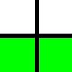
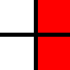
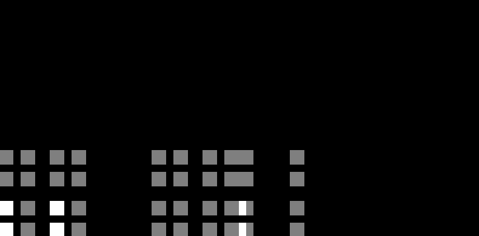
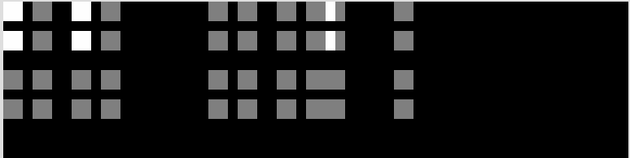
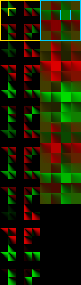
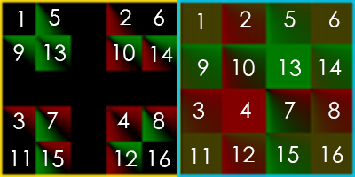
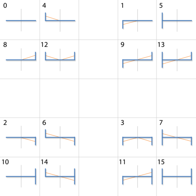
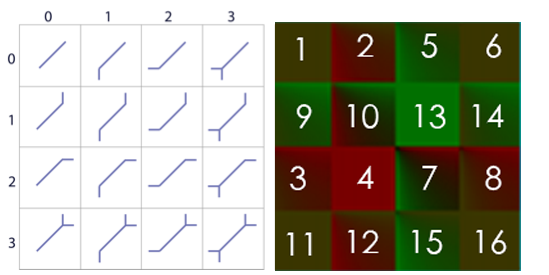

PPAA
所谓PPAA（Post Process Antialiasing)，也叫FBAA（Filter-Based Antialiasing），是基于后处理的各种抗锯齿技术的统称。在PPAA之前，主流AA技术是MSAA（MultiSamples AA）、SSAA（SuperSamples AA）。SSAA是AA中最暴力也是最完美的解决方案，而MSAA是与硬件紧密结合的built-in AA。对于forward rendering来说，MSAA几乎是唯一的选择。
然而，MSAA这种古老的、built-in的技术，已经不太能满足现代渲染器的需求了。它有两大问题，一是MSAA会有多余的AA计算，二是MSAA不适用于deferred rendering。
鉴于MSAA的不足，PPAA就蓬勃发展起来了。PPAA强大之处在于可以自定义、且硬件无关、兼容forward／defer，所以基于PPAA的算法非常多。而其中的翘楚，SMAA(Subpixel Morphological Antialiasing)，性能以及AA质量都很不错。本文将着重介绍SMAA。
值得一提的是，SMAA的前身是Jimenez's MLAA，也是同一个团队做出来的，SMAA可以认为是在质量和性能两方面都超越Jimenez's MLAA的一个进化版。所以可以先阅读Jimenez's MLAA的论文再来学习SMAA。
SMAA
SMAA的模式处理较之MLAA有了新的改进。MLAA的方法，对sharp物体的轮廓的"边角"和"锯齿角"并不能区分，导致边角也被当作锯齿角处理，导致边角被修成了圆角。而SMAA中，做了进一步的观察：对于锯齿角，大小不超过一个像素，而sharp的边角很大几率超过1个像素。因此，SMAA判断锯齿角需要计算2个像素长度的范围，也从而识别出真的边角。但也就使得SMAA的算法极为复杂。
SMAA总共3个pass：
- Pass 1，算edgeTex
- Pass 2，用edgeTex算weightTex
- Pass 3，用weightTex混合原始图像，得到抗锯齿图像
边缘纹理的计算 Edge Detection (edgeTex) （Pass 1）
锯齿问题体现在图像上几何物体的边缘处，也就是说，如果能准确地post process出图像上哪些地方是边，哪些地方不是。检测过少，锯齿边就会残留；检测过多，图像就会糊。为来更好地提升AA质量，SMAA边缘检测算法的选取非常关键。
相比基于normal map、depth map，基于颜色的边缘检测尤佳。一是因为，颜色信息容易获得，而深度图／法线图相对难获得，例如对于图像处理领取，用户提供的只有照片而已；二是因为它还有一个优点：对于做了shading后才产生的锯齿，也一样能处理（例如有梯度的toon shading）。
SMAA首推的是基于Luma（亮度）的边缘检测算法。
1，vertex shader，根据纹理坐标输出3组offset，每组2个边，总共6个边要检测：
vec4 SMAA_RT_METRICS = vec4(1.0 / imgSize.x, 1.0 / imgSize.y, imgSize.x, imgSize.y);
Offsets[0] = fma(SMAA_RT_METRICS.xyxy, vec4(-1.0, 0.0, 0.0, -1.0), texCoord.xyxy); // Left / Top Edge
Offsets[1] = fma(SMAA_RT_METRICS.xyxy, vec4( 1.0, 0.0, 0.0, 1.0), texCoord.xyxy); // Right / Bottom Edge
Offsets[2] = fma(SMAA_RT_METRICS.xyxy, vec4(-2.0, 0.0, 0.0, -2.0), texCoord.xyxy); // Leftx2 / Topx2 Edge

2，fragment shader，先求出当前fragment的luma值：
// Calculate lumas:
float3 weights = float3(0.2126, 0.7152, 0.0722);
float L = dot(texture(colorTex, texcoord).rgb, weights);
（RGB->luma的公式来自wiki https://en.wikipedia.org/wiki/Relative_luminance ）
3，算Left和Top的luma值，以及算Left和L的差值delta.x、Top和L的差值delta.y；如果delta.x < threshold.x，edges.x就等于0.0，代表不是边（因为差值很小，即亮度差异小），y方向同理：
float Lleft = dot(texture(colorTex, offsets[0].xy).rgb, weights);
float Ltop = dot(texture(colorTex, offsets[0].zw).rgb, weights);
float4 delta;
delta.xy = abs(L - float2(Lleft, Ltop));
float2 edges = step(threshold, delta.xy);
if (dot(edges, float2(1.0, 1.0)) == 0.0)
discard; // 如果2个方向都没有边，就可以排除这个fragment了
- 如果Left或Top至少有一个是边，就再进一步做检测。
// 计算Right Bottom的luma差值
float Lright = dot(texture(colorTex, offsets[1].xy).rgb, weights);
float Lbottom = dot(texture(colorTex, offsets[1].zw).rgb, weights);
delta.zw = abs(L - float2(Lright, Lbottom)); // 和算delta.xy过程差不多
// 分别算出x、y方向的最大luma差值
float2 maxDelta = max(delta.xy, delta.zw);
// 算出 Left x2 and Top x2 的luma:
float Lleftleft = dot(texture(colorTex, offsets[2].xy).rgb, weights);
float Ltoptop = dot(texture(colorTex, offsets[2].zw).rgb, weights);
// 算出Left和Left x2的luma差值、Top和Top x2的luma差值
delta.zw = abs(float2(Lleft, Ltop) - float2(Lleftleft, Ltoptop));
// Calculate the final maximum delta:
// x、y方向分别最终的最大luma差值
maxDelta = max(maxDelta.xy, delta.zw);
// x、y两个方向中取其中最大的luma差值
float finalDelta = max(maxDelta.x, maxDelta.y);
// Local contrast adaptation:
float SMAA_LOCAL_CONTRAST_ADAPTATION_FACTOR = 2.0;
// Left、Top亮度差值*2后需超过finalDelta才真的是边
edges.xy *= step(finalDelta, SMAA_LOCAL_CONTRAST_ADAPTATION_FACTOR * delta.xy);
return edges;
权重纹理的计算 Blending Weight Calculation (weightTex)（Pass 2）
最复杂的一个pass，需要分成多个部分讲解。
预生成searchTex
根据当前像素坐标，搜索当前这个像素对应的边的2个端点，求出2个距离值\(d_{1}、d_{2}\)，是实现模式分类的关键。
因为edgeTex已经包含了边的信息，如果直接暴力搜索端点，就需要对edgeTex做非常多次的纹理采样（我没搞错的话，次数应该等于\(d_{1} + d_{2}\) ）。在Jimenez's MLAA中，使用一个叫bilinear filtering的搜索技巧，能大约减少一半的纹理采样数。原理大致如下：
假设有2个要采样的相邻像素点，现在目标是用一次采样得到这2个点的'边'值：\(b_{1}、b_{2}\) （要么等于0要么等于1，代表有无边）。首先得把这个edgeTex纹理的过滤设置，设置成GL_LINEAR。这样就可以利用GPU的插值机制，通过求2个像素点连线上的某一个中间点x的纹理坐标，做一次采样，得到一个[0,1]之间的值。有了这个值后，是能够恢复出\(b_{1}、b_{2}\) 的值的。是不是很神奇？数学原理是这样的：
\[ f_{x}(b_{1},b_{2},x) = x\cdot b_{1} + (1 - x)\cdot b_{2}，b_{1} = 0／1，b_{2} = 0／1 \]
（值得一提的是，在shader里需要把 \( x\cdot b_{1} + (1 - x)\cdot b_{2} \)变换成 \( x\cdot (b_{1} - b_{2} ) + b_{2} \)，即lerp形式，这样可以减少一次乘法运算）
假设我们先取x=0.5，那么f的取值范围为[0, 0.5, 1]，具体的映射关系为：
\( b_{1}\ \ \ b_{2}\ \ \ —— \ \ \ f \)
\( 0\ \ \ \ \ 0\ \ \ \ —— \ \ \ 0 \)
\( 0\ \ \ \ \ 1\ \ \ \ —— \ \ \ 0.5 \)
\( 1\ \ \ \ \ 0\ \ \ \ —— \ \ \ 0.5 \)
\( 1\ \ \ \ \ 1\ \ \ \ —— \ \ \ 1 \)
可以看到左右两边并不是一一对应的关系，0.5对应了2种情况。那么假设我们再取别的值，且满足\(x \neq 0.5，x \neq 0 ，x \neq 1 \)，那么有：
\( b_{1}\ \ \ b_{2}\ \ \ —— \ \ \ f \)
\( 0\ \ \ \ \ 0\ \ \ \ —— \ \ \ 0 \)
\( 0\ \ \ \ \ 1\ \ \ \ —— \ \ \ 1 - x \)
\( 1\ \ \ \ \ 0\ \ \ \ —— \ \ \ x \)
\( 1\ \ \ \ \ 1\ \ \ \ —— \ \ \ 1 \)
神奇的事情发生了，左右两边满足了一一对应关系！也就是说，只需要知道x的值，就能'解码'出\(b_{1}、b_{2}\)的值！
这个bilinear filtering虽好，但它只能搜索一个方向（一维）。而在SMAA中，因为需要进一步做好模式分类，需要支持二维的edgeTex搜索。所以SMAA拓展了bilinear filtering到了二维：
\[ f_{xy}(b_{1},b_{2},b_{3},b_{4},x,y) = f_{x}(b_{1},b_{2},x) \cdot y + f_{x}(b_{3},b_{4},x) \cdot (1 - y) \]
这里增加了一个y，y和x是类似的，需要赋予一个不等于0.5的值，但需要附加一个限制是y = 0.5x（可以假设y!=0.5x去推导上面的公式，会得到无法一一对应的情况）。这样拓展后，就可以用2个常量值x、y，对\(b_{1}、b_{2}、b_{3}、b_{4}\)所有组合编码出\(2^{4} \)共16种取值情况。也就是依然可以用一个f值，反向找出\(b_{1}、b_{2}、b_{3}、b_{4}\)！
这个映射关系可以打表到代码里减少shader计算，但这样还不够，SMAA做啦进一步的优化，减少了对这个映射表的访问。作者写了一个脚本来生成一个叫searchTex的东西。先讲一下生成步骤再说用法。
首先，确定了刚才提到的常量x，y的值，x等于0.25，y等于0.5x=0.125。然后枚举16种情况，调用bilinear函数，生成映射表:
# Interpolates between two values:
def lerp(v0, v1, p):
return v0 + (v1 - v0) * p
# Calculates the bilinear fetch for a certain edge combination:
def bilinear(e):
# e[0] e[1]
#
# x <-------- Sample position: (-0.25,-0.125)
# e[2] e[3] <--- Current pixel [3]: ( 0.0, 0.0 )
a = lerp(e[0], e[1], 1.0 - 0.25)
b = lerp(e[2], e[3], 1.0 - 0.25)
return lerp(a, b, 1.0 - 0.125)
# This dict returns which edges are active for a certain bilinear fetch:
# (it's the reverse lookup of the bilinear function)
edge = {
bilinear([0, 0, 0, 0]): [0, 0, 0, 0], # 0.0
bilinear([0, 0, 0, 1]): [0, 0, 0, 1], # 0.65625
bilinear([0, 0, 1, 0]): [0, 0, 1, 0], # 0.21875
bilinear([0, 0, 1, 1]): [0, 0, 1, 1], # 0.875
bilinear([0, 1, 0, 0]): [0, 1, 0, 0], # 0.09375
bilinear([0, 1, 0, 1]): [0, 1, 0, 1], # 0.75
bilinear([0, 1, 1, 0]): [0, 1, 1, 0], # 0.3125
bilinear([0, 1, 1, 1]): [0, 1, 1, 1], # 0.96875
bilinear([1, 0, 0, 0]): [1, 0, 0, 0], # 0.03125
bilinear([1, 0, 0, 1]): [1, 0, 0, 1], # 0.6875
bilinear([1, 0, 1, 0]): [1, 0, 1, 0], # 0.25
bilinear([1, 0, 1, 1]): [1, 0, 1, 1], # 0.90625
bilinear([1, 1, 0, 0]): [1, 1, 0, 0], # 0.125
bilinear([1, 1, 0, 1]): [1, 1, 0, 1], # 0.78125
bilinear([1, 1, 1, 0]): [1, 1, 1, 0], # 0.34375
bilinear([1, 1, 1, 1]): [1, 1, 1, 1], # 1.0
}
然后观察16个bilinear值，发现它们有最大公约数0.03125，于是，可以设计一个大小为33 x 33的数组（这是因为33 = 1 / 0.03125 + 1），又因为搜索的是line，需要分左右（也只有左右2个方向），所以数组要乘2，变成66 x 33。
然后开始枚举所有pattern：
# Calculate delta distances to the left:
image = Image.new("RGB", (66, 33))
for x in range(33):
for y in range(33):
texcoord = 0.03125 * x, 0.03125 * y
if texcoord[0] in edge and texcoord[1] in edge:
edges = edge[texcoord[0]], edge[texcoord[1]]
val = 127 * deltaLeft(*edges) # Maximize dynamic range to help compression
image.putpixel((x, y), (val, val, val))
#debug("left: ", texcoord, val, *edges)
# Calculate delta distances to the right:
for x in range(33):
for y in range(33):
texcoord = 0.03125 * x, 0.03125 * y
if texcoord[0] in edge and texcoord[1] in edge:
edges = edge[texcoord[0]], edge[texcoord[1]]
val = 127 * deltaRight(*edges) # Maximize dynamic range to help compression
image.putpixel((33 + x, y), (val, val, val))
#debug("right: ", texcoord, val, *edges)
其中的if texcoord[0] in edge and texcoord[1] in edge意思是当前这2个纹理坐标x y，都刚好是一个f，f就对应了某四个bool值，2个f就组成一个pattern。edges = edge[texcoord[0]], edge[texcoord[1]]，分别解码出了x y方向的4个bool值。接着是另外两个函数:
# Delta distance to add in the last step of searches to the left:
def deltaLeft(left, top):
d = 0
# If there is an edge, continue:
if top[3] == 1:
d += 1
# If we previously found an edge, there is another edge and no crossing
# edges, continue:
if d == 1 and top[2] == 1 and left[1] != 1 and left[3] != 1:
d += 1
return d
# Delta distance to add in the last step of searches to the right:
def deltaRight(left, top):
d = 0
# If there is an edge, and no crossing edges, continue:
if top[3] == 1 and left[1] != 1 and left[3] != 1:
d += 1
# If we previously found an edge, there is another edge and no crossing
# edges, continue:
if d == 1 and top[2] == 1 and left[0] != 1 and left[2] != 1:
d += 1
return d
deltaLeft，就是根据x y方向2组bool值，算出一个长度补充值d，d的取值范围是0/1/2。top[3]是指当前像素在y方向上的bool值，如果为0，就是没边，d = 0；如果为1，就是有边，那么d = 1；再如果top[2]也有边，且x方向没有边(没有交叉边)，那么d = 2。deltaRight过程类似。
以下图为例，上面的是top，下面的是left，标绿色／红色的是边，那么经过deltaLeft运算后，下面的pattern会得到d=1(有交叉边)。


求出d后， val = 127 * d，把d映射到0／127/254，然后就可以填入到searchTex了，相当于是在生成一张三值的灰度值。

观察searchTex发现，这图有很大部分是全黑的。略显多余，于是作者补充了一个裁剪操作：
image = image.crop([0, 17, 64, 33])
image = image.transpose(Image.FLIP_TOP_BOTTOM)
把上面的17行黑色区域都裁掉，searchTex就变成了64x16的大小，符合2的幂次方，更迷你更优雅。第二行代码做了个上下翻转，用意不明。最终的searchTex如下:

searchTex会用在横向和纵向的搜索中。
预生成areaTex
areaTex是用来快速算出面积比，即混合权重的。AreaTex的生成步骤比searchTex更复杂，作者更是用了多线程来做。为了破解areaTex的魔法原理，需要慢慢剖析AreaTex.py。尽管AreaTex.py已经有不少注释，但还是很难理解。
先来看areaTex长啥样：

它分左右两列，左边一列七个大格（黄色框代表第一个大格），每个大格包含16个pattern的area纹理，右边一列类似，但只有五个大格（蓝色框）。有意思的是黄框大格是有镂空的，理应可以放5*5=25个小格，但只放了16个，所以有个十字架的黑色区域（原因和binear filtering有关）。因为areaTex有4个维度： ortho还是diag、哪一个大格、哪一个小格、纹理坐标，所以areaTex是一个4D的纹理。
标记下16个pattern在大格里的位置：

（值得一提的是，对于SMAA 1x，只会用到第一排这2个大格。）
对于orhto、并且只用SMAA 1x的情况，查询areaTex需要这么些参数：当前像素点的edge line的left方向和right方向末尾的边值e1、e2以及长度值d1、d2。e1、e2用来定位大格中的小格，d1、d2用来定位小格里的像素点。
注意，因为areaTex分辨率有限，并且需要用长度值去索引，所以对于超长的锯齿边，就行不通了。作者也加了一个#define SMAA_MAX_SEARCH_STEPS 32。32就是小格的边长的一半，因为做了一个sqrt的压缩。
areaTex的使用地方极少，只有在pass2调用了两次SMAAArea。所以关键的地方是areaTex的原理和生成（AreaTex.py）、以及SMAAArea需要的参数的计算。
areaTex的生成是brute force的，遍历每一个subsample offset、每一个pattern、每一个left distance、每一个right distance，然后算出left、right方向4个面积存到weightTex，就可以给pass 3用了。
先看如何生成Ortho（左边列）的一个小格：
def tex2dortho(args):
pattern, path, offset = args # 对哪一个offset、哪一个pattern做生成，SMAA 1x的话只需要认为offset为0
size = (SIZE_ORTHO - 1)**2 + 1 # 本来只有SIZE_ORTHO大小，这里偷偷放大一倍来计算，最终会被压缩回SIZE_ORTHO放进4D纹理里
tex2d = Image.new("RGBA", (size, size))
for y in range(size):
for x in range(size):
# x y代表left distance 和 right distance
p = areaortho(pattern, x, y, offset)
p = p[0], p[1], 0.0, 0.0 # p[0] p[1]就是一个edge关联的2个像素的a值了
tex2d.putpixel((x, y), bytes(p))
tex2d.save(path, "TGA")
关键的areaortho：
# Calculates the area for a given pattern and distances to the left and to the
# right, biased by an offset:
def areaortho(pattern, left, right, offset):
# Calculates the area under the line p1->p2, for the pixel x..x+1:
def area(p1, p2, x):
......
# o1 |
# .-------´
# o2 |
#
# <---d--->
d = left + right + 1
o1 = 0.5 + offset
o2 = 0.5 + offset - 1.0
if pattern == 0:
#
# ------
#
return 0.0, 0.0
elif pattern == 1:
#
# .------
# |
#
# We only offset L patterns in the crossing edge side, to make it
# converge with the unfiltered pattern 0 (we don't want to filter the
# pattern 0 to avoid artifacts).
if left <= right:
return area(([0.0, o2]), ([d / 2.0, 0.0]), left)
else:
return 0.0, 0.0
elif pattern == 2:
#
# ------.
# |
if left >= right:
return area(([d / 2.0, 0.0]), ([d, o2]), left)
else:
return 0.0, 0.0
elif pattern == 3:
#
# .------.
# | |
a1 = vec2(*area(([0.0, o2]), ([d / 2.0, 0.0]), left))
a2 = vec2(*area(([d / 2.0, 0.0]), ([d, o2]), left))
a1, a2 = smootharea(d, a1, a2)
return a1[0] + a2[0], a1[1] + a2[1]
elif pattern == 4:
# |
# `------
#
if left <= right:
return area(([0.0, o1]), ([d / 2.0, 0.0]), left)
else:
return 0.0, 0.0
elif pattern == 5:
# |
# +------
# |
return 0.0, 0.0
elif pattern == 6:
# |
# `------.
# |
#
# A problem of not offseting L patterns (see above), is that for certain
# max search distances, the pixels in the center of a Z pattern will
# detect the full Z pattern, while the pixels in the sides will detect a
# L pattern. To avoid discontinuities, we blend the full offsetted Z
# revectorization with partially offsetted L patterns.
if abs(offset) > 0.0:
a1 = vec2(*area(([0.0, o1]), ([d, o2]), left))
a2 = vec2(*area(([0.0, o1]), ([d / 2.0, 0.0]), left))
a2 += vec2(*area(([d / 2.0, 0.0]), ([d, o2]), left))
return (a1 + a2) / 2.0
else:
return area(([0.0, o1]), ([d, o2]), left)
elif pattern == 7:
# |
# +------.
# | |
return area(([0.0, o1]), ([d, o2]), left)
elif pattern == 8:
# |
# ------´
#
if left >= right:
return area(([d / 2.0, 0.0]), ([d, o1]), left)
else:
return 0.0, 0.0
elif pattern == 9:
# |
# .------´
# |
if abs(offset) > 0.0:
a1 = vec2(*area(([0.0, o2]), ([d, o1]), left))
a2 = vec2(*area(([0.0, o2]), ([d / 2.0, 0.0]), left))
a2 += vec2(*area(([d / 2.0, 0.0]), ([d, o1]), left))
return (a1 + a2) / 2.0
else:
return area(([0.0, o2]), ([d, o1]), left)
elif pattern == 10:
# |
# ------+
# |
return 0.0, 0.0
elif pattern == 11:
# |
# .------+
# | |
return area(([0.0, o2]), ([d, o1]), left)
elif pattern == 12:
# | |
# `------´
#
a1 = vec2(*area(([0.0, o1]), ([d / 2.0, 0.0]), left))
a2 = vec2(*area(([d / 2.0, 0.0]), ([d, o1]), left))
a1, a2 = smootharea(d, a1, a2)
return a1[0] + a2[0], a1[1] + a2[1]
elif pattern == 13:
# | |
# +------´
# |
return area(([0.0, o2]), ([d, o1]), left)
elif pattern == 14:
# | |
# `------+
# |
return area(([0.0, o1]), ([d, o2]), left)
elif pattern == 15:
# | |
# +------+
# | |
return 0.0, 0.0
（代码贴进来后排版乱来= =）
这里面根据pattern的值做来16个分支判断，为什么是16，看注释的图就知道了，4个边值\(e_{1}、e_{2}、e_{3}、e_{4}\)的组合都要枚举出来，每个e取值0或1，所以有2的4次方共16种情况。
中间的横杠代表在search的时候的当前line，长度等于当前像素左边缘到左端点+右边缘到右端点+自己的宽度1，即d=left+right+1。
// 因为SMAA 1x的offset为0，所以 o1 = 0.5， o2 = 0.5 - 1.0 = -0.5，代表o1当前像素的上边缘距离中心0.5个像素距离，o2是-0.5距离。
一型pattern：1。对于pattern 0，左右都没有crossing edge，是完美的直线，不需要抗锯齿，所以返回了两个0；
L型pattern：1、2、4、8。对于pattern 1，先做了一个判断if left <= right，这是为了收敛到pattern 0，当left比right小，且是这个L型pattern，那么当前像素才需要做混合，也就需要计算面积。注释也写着只对L型pattern的crossing edge一侧做计算。pattern 2、4、8，就是pattern 1的3种镜像情况了，同理。
和一型pattern输出一样的pattern：5、10、15。观察这几个pattern可以发现有上下对称性，等于2个L叠加，互相抵消掉了。返回两个0.
U型pattern：3、12。对于3，就是1、2的叠加，同时做了1和2的面积计算，再smooth，再混合；同理，12就是4、8的叠加了。
Z型pattern：6、9。对于SMAA 1x，即offset=0，Z型pattern 6等同于h型pattern 7，Z型pattern 9等同于h型pattern 13。
h型pattern：7、11、13、14。相当直白的area函数调用。
作者绘制的一张pattern图（就是左列的第一个大格）：

观察此图和对应分支代码，可以发现area函数的坐标系原点是在left处，即最左边edge那里。以这里为原点，+x方向朝右，+y方向朝下。
# Calculates the area under the line p1->p2, for the pixel x..x+1:
def area(p1, p2, x):
d = p2[0] - p1[0], p2[1] - p1[1]
x1 = float(x)
x2 = x + 1.0
y1 = p1[1] + d[1] * (x1 - p1[0]) / d[0]
y2 = p1[1] + d[1] * (x2 - p1[0]) / d[0]
inside = (x1 >= p1[0] and x1 < p2[0]) or (x2 > p1[0] and x2 <= p2[0]) # 线段[x,x+1]和[p1,p2]需要重叠
if inside:
istrapezoid = (copysign(1.0, y1) == copysign(1.0, y2) or
abs(y1) < 1e-4 or abs(y2) < 1e-4)
# 计算是不是梯形（y1和y2同正负号）／直角形（y1或y2的长度为0）
if istrapezoid:
a = (y1 + y2) / 2.0 # 梯形面积公式：0.5 * h * (上底+下底) = 0.5 * 1 * (y1 + y2)
if a < 0.0: # y1和y2都在top edge线下方
return abs(a), 0.0
else:
return 0.0, abs(a)
else: # [p1,p2]和top edge交叉了，形成2个三角形
x = -p1[1] * d[0] / d[1] + p1[0]
a1 = y1 * modf(x)[0] / 2.0 if x > p1[0] else 0.0
a2 = y2 * (1.0 - modf(x)[0]) / 2.0 if x < p2[0] else 0.0
a = a1 if abs(a1) > abs(a2) else -a2
if a < 0.0:
return abs(a1), abs(a2)
else:
return abs(a2), abs(a1)
else:
return 0.0, 0.0
函数说明写着area函数算的是p1到p2这条线段下，x到x+1范围内的面积，x参数其实就是等于left，因为16个pattern都是传入了left。所以[x, x+1]就是[left，left+1]，又因为坐标系原点在最左边，[left，left+1]指的其实就是当前像素的左边界和右边界（一个像素的宽度为1）。所以area的任务就是要算出p1-p2把当前像素切开了多大面积。
再就是斜向的情况：

如果能完全理解ortho的情况，diag的就触类旁通了。这里暂时跳过。（这套SMAA太多细节了，每个点都搞懂实在不容易）
search算法
(待续)
用weightTex混合原图像（Pass 3）
总结
SMAA的优点：
- 强配置性，可以根据需要决定使用SMAA 1x/SMAA t2x/SMAA 4x
- SMAA 4x的性能和质量足以抗衡SSAA，低配的SMAA 1x对低端机也足够用了
- 支持defer框架
SMAA的缺点：
- 流程太复杂，代码各种trick，仅读论文是看不懂代码的。只能边看代码边读论文，结合地去理解。
- 需要预生成areaTex、searchTex，维护shader之外还得维护2个py脚本，定制修改SMAA比较复杂。
我说的缺点可能比较naive，说不定对大佬来说这套SMAA并不复杂。
本文仅介绍SMAA 1x的技术原理，至于SMAA t2x和SMAA 4x需要用到temporal reprojection和supersampliing，就是更进一步的话题了。
最终效果
原始图像:

经过SMAA 1x过滤后:

资料
博主将十分感谢对本文章的任意金额的打赏^_^